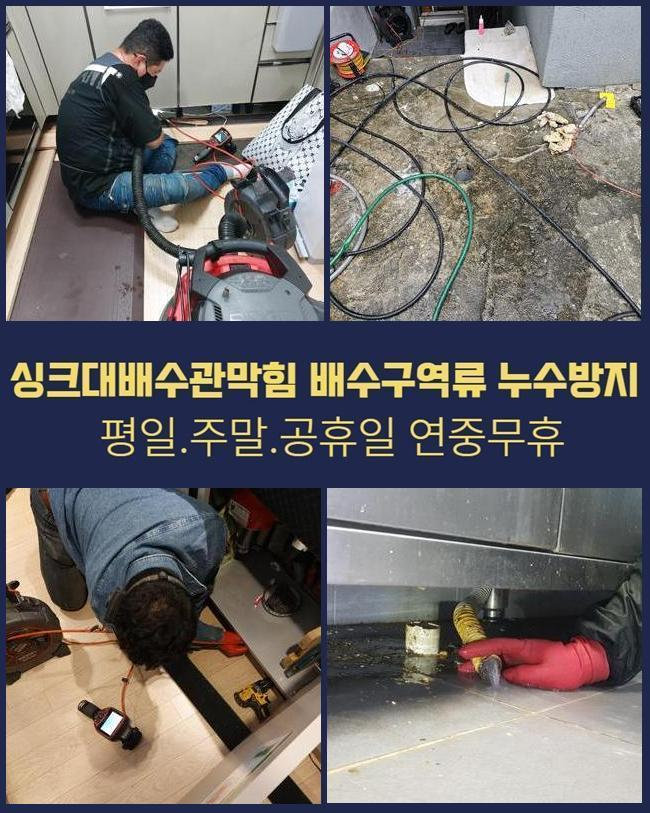
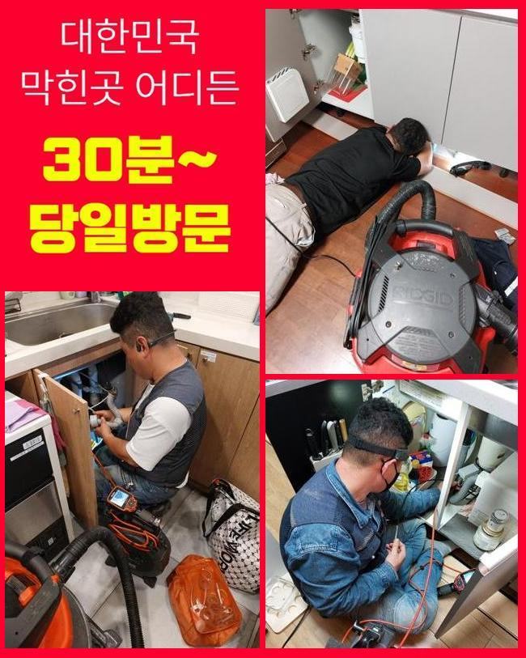
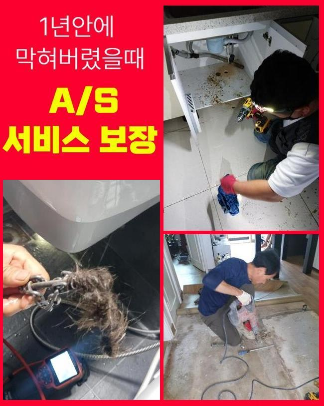
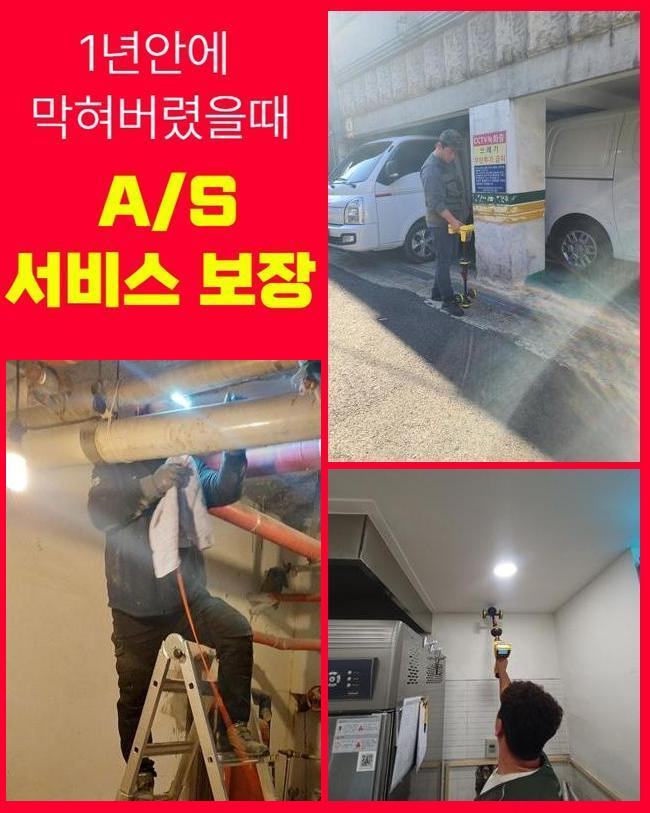
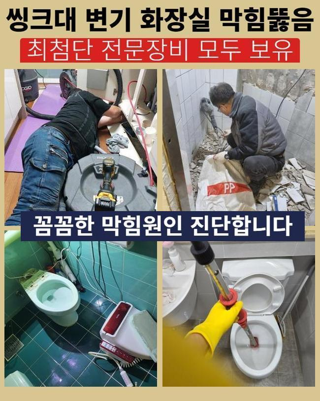
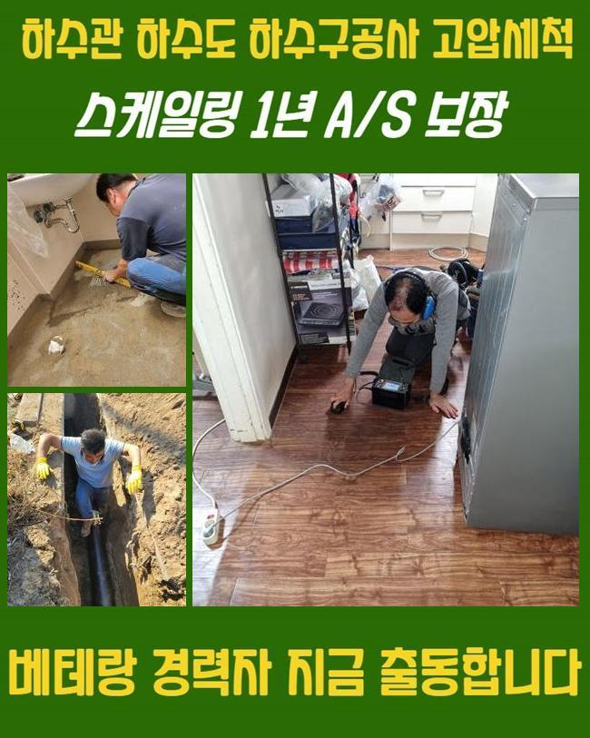
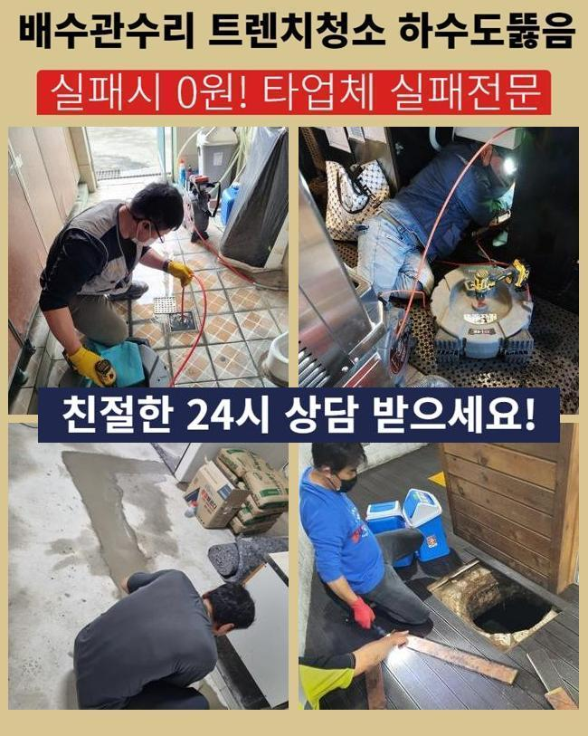

🏠 중구 소공동싱크대막힘 광희동 배관내시경카메라 출장설비
용인 싱크대막힘 전문 시공 후기

📋 작업 개요
- 위치: 용인
- 서비스 유형: 싱크대막힘, 하수구막힘, 배관막힘, 집수정막힘, 누수수리, 역류해결, 뚫는업체, 고압세척
- 작업 일시: 2024. 11. 16. 16:17
- 업체명: 하수구수사대 (010-5615-2118)
🔍 문제 상황
중구 소공동싱크대막힘 광희동 배관내시경카메라 출장설비
하수구가 막혔을때 어떤장소든지 불편함들이 느껴질수밖에없어요
작업내용으로 설명드리려고하니 참고해보시면 도움되시리라 생각해요
들렸던곳은 상가였는데 하수구막힘으로 전화를주셨는데 집수정세척도 함께해달라고 좋겠다고하셨기에 방문하게되었어요
여러매장이 입점한상가에서 막혀버리게된다면 물이용시 불편함이생겨 영업을 진행하는데있어 곤란하기때문에 신속히 해결해야해요
때때로 막힘현상이 발생될때마다 셀프방식으로 대처하셨다고 하셨는데요
간편한방법은 시도할순있지만 애당초에 심각한 상황이라면 이러한방법으로는 일시적으로만 처리된다는것을 알아야한답니다
그렇지만 대부분이라면 별일아니라고 상태에대하여 인지한다는것이죠
막힘문제는 간단히 이물제거만 진행하는것이아닌 전체적인방식으로 파악하고 작업해봐야하죠

🔎 원인 분석
💡 전문가 진단: 정밀 진단 장비를 사용하여 슬러지의 고착 여부를 판명하고 타격/세척 작업을 실시했습니다.
현장에이동하여 외부하수구를 살펴봤더니 집수정을통해서 막힘이생겼다는걸 알수가있었어요
넘칠수준정도로 막힌상태였고 그대로둔다면 역류발생으로 길거리에 오수가 흘러넘칠것만 같았습니다
신속빠르게 세척기계를 준비한뒤 깊숙히박혀버린 잔해물들을 제거해줘야해요
이물이차있어 입구부분을 발견하기 어려웠으므로 흡입기구를 통하여 넘쳐있는물부터 흡입해주었답니다
그다음에는 노즐을집어넣어 작업해줬어요
다량의 이물이보였기에 한번에없애기는 어려웠죠
여러번 반복하며 세척과정을 진행했으며 진행결과 입구쪽이보여 내시경으로 점검해보니 아직도많이 기름이물이 잔여된것을 파악해볼수있었죠
기름슬러지외에도 여러성질의 이물질들이 들어차있었죠
상가는이런식으로 다양한원인으로 막히다보니 신경써서 관리하셔야하죠
한번더 강조드리는것으로 관리하지않고 별일아닌듯 생각하신다면 2차적인피해가 발생될수있어요

🔧 작업 과정
저희업체에서는 집수정이나 배관등 하수구와관련해 트러블이생길경우 해결해드릴수있고 언제든지 알고싶으시면 상담요청주시면 되겠습니다
상업시설같은 장소가 막힘문제로 인하여 물샘현상이 발생하는원인은 금일현장처럼 배관내부에 잔해물들이 들어차있기 때문이랍니다
하수관안에 잔해물이 퇴적될수록 덩어리로뭉쳐서 계속해서 크기가커지며 물의통수를 방해하여 결국엔 지금같은일이 발생하는것이에요
막힘문제의 경우에는 여러가지의 증상으로인해 발발되지만 일반적인경우 안쪽에이물들이 쌓이고쌓이며 하수구막힘이 발생되는거랍니다
상가에서는 이러한현상이 빈번히 발생되는데 그이유는 여러사람들이 건물을이용하기 때문이에요
오늘작업도 매한가지로 오염물이 퇴적되서 막혀버리게된 것이랍니다
하수는한곳으로 모인채 빠져나가는데 메인하수구에 쓰레기같은 다양한이물이 퇴적될경우 당연하게도 막히게되죠
그렇다보니 상시 관리에신경을써 막히지않도록 예방하셔야합니다
막히게되었다면 업체를통하여 막힘과연관해 알아본후에 증상을 처리해야한답니다
배수관속은 육안을통하여 살피기어려워서 전문장비들이 구비된곳에 맡겨서 하수구안이 무슨이유로 막혔을지 파악한뒤에 뚫어야해요
배관과관련된 지식들이 무지한상태에서 무리하여 배수관을 건드린다면 되려 피해가커지며 악화가된답니다
오랫동안 고객분께서 입구부분만 잔해물들을 제거했으므로 막힘현상들이 발현되었고 오랜기간동안 쌓이게되어 작업착수시 오랜시간이 걸릴수도있어요
찌꺼기들이 올라왔으며 마침내 많던이물들을 소거시켰어요!
오늘의현장은 오염도부분에서 심각했기에 다른장소에 비하여 시간자체가 조금더걸렸지만 제거해냈습니다
이물질을 모두 확인한 후에 한곳에모아 마무리할수있었어요


✅ 작업 완료
하수구카메라를 통하여 배수관내부를 조사해보니 상당히많은 오염물이있던 배수관이 새것과같이 말끔해졌어요
급작스럽게 일어난 문제때문에 불편하다면 고민말고 전문가를호출해 조치를취하는게 확실한 해결책이에요
현장상태를 세세하게 분석하여 합리적으로 수리해드리고있으니 도움을원한다면 우려하지말고 맘편히 문의하시면 됩니다!
전지역어디든 60분내로 방문할수있으니 신뢰해주시면 뚫는결과로 나타내도록 할테니 걱정마세요!




⚠️ 베란다 누수 및 방수 관리 방법
- ✅ 비가 많이 올 때 창틀 주변이나 아래층 천장에 얼룩이 생기는지 정기적으로 확인해 보세요.
- ✅ 우수관 주변 실리콘 마감이 들뜨거나 깨진 틈새가 있는지 손상 여부를 수시로 체크하세요.
- ✅ 베란다 바닥 타일의 줄눈(메지)이 소실되면 그 틈으로 물이 침투하여 누수가 유발됩니다.
- ✅ 누수 의심 증상 발견 시 방치하면 아래층 손실이 커지므로 즉시 전문가의 진단을 받으십시오.
💡 핵심 정리
- 확실한 장비 작업(내시경 점검 및 샤프트 스케일링)으로 원인을 뿌리 뽑습니다.
- 작업 후 1년 이내에 동일한 부위 재발 시 100% 무상 A/S 서비스를 보장합니다.
- 서울 · 경기 · 인천 전 지역에 24시간 언제든 긴급 출동할 수 있도록 항시 대기 중입니다.
❓ 자주 묻는 질문 (FAQ)
🚨 용인 싱크대막힘 문제로 고민이신가요?
정확한 원인 진단과 확실한 시공으로 재발 없는 해결을 약속드립니다.
24시간 긴급 출동 | 서울 · 경기 · 인천 전지역 | 1년 내 재발 시 무상 A/S